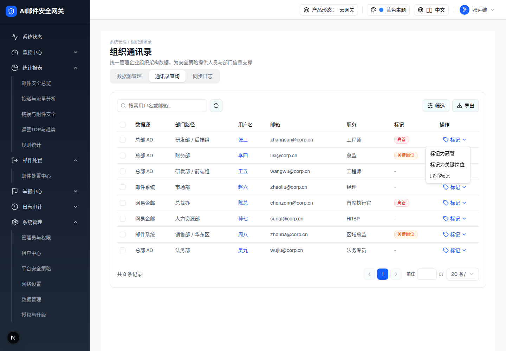

| 所属组件 | 2.3 通讯录查询 Tab |
| 触发路径 | 行内「标记 ▾」按钮（Tag 图标 + ChevronDown）→ DropdownMenu（align=end） |
预览可操作：下方为「张三」行（当前标记=高管）+ 打开态菜单快照。点击菜单项即时改写该行「标记」列徽章并出 toast（demo 行为：markOne 即时生效，无确认弹窗 —— 批量操作才有确认）。
| 数据源 | 部门路径 | 用户名 | 邮箱 | 职务 | 标记 | 操作 | |
|---|---|---|---|---|---|---|---|
| 总部 AD | 研发部 / 后端组 | zhangsan@corp.cn | 工程师 | 高管 |

| 菜单项 | 行为（浏览器实测） |
|---|---|
| 标记为高管 | 该行标记列变红徽章「高管」+ toast「已标记为高管」 |
| 标记为关键岗位 | 橙徽章「关键岗位」+ toast「已标记为关键岗位」 |
| 取消标记 | 标记列变灰色「-」+ toast「已取消标记」 |
| 比对项 | demo 实际 DOM | 嵌入的 HTML | 是否一致 |
|---|---|---|---|
| 菜单根节点 | [role=menu]（Radix DropdownMenuContent） | 同（快照原样嵌入，规格侧中和 popper 定位） | 一致 |
| 菜单节点数 | 4 | 4 | 一致 |
| 菜单项数 | 3 | 3 | 一致 |
| 上下文行 | demo 表格第 1 行（张三 / 高管） | 同一快照行 | 一致 |